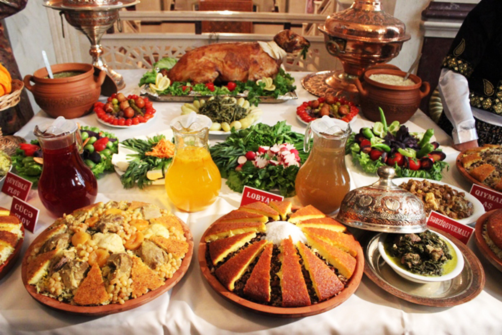

Кухня
Одним из факторов, оказывающих сильное влияние на азербайджанскую кухню, является печь (тандыр, кура, букари, кулфа, чала, оджак, лист, шашлык и др.). На Куре в основном в глиняных горшках готовят различные хлеба, мучные кондитерские изделия, пити и бозбаши. Мангал, в отличие от других печей, предназначен в основном для приготовления шашлыка (шашлыка). Кульфа, которая по своей структуре похожа на большой шар и в настоящее время используется редко, содержит хлеб кулфа, комбе и т. д. был приготовлен. Различают «кованые», «бадли» и «кирпичные» типы подземных и наземных печей. В тандыре готовят различные лаваши, тандырный хлеб, беймчореи, различные блюда, кондитерские изделия. Более твердые блюда готовили в пароварке, своего рода закрытой печи. Котел подвешивался к крючкам на стенах парилки. Отсюда и выражение «подвесить горшок», которое до сих пор употребляется в азербайджанском языке в значении «готовка». В угольках пара варили картошку, кукурузу, а иногда и тонкие кусочки мяса. Один из видов печей, которыми активно пользуются азербайджанцы, – это листовые печи. Блюда готовили в Сак. В глиняных и каменных подносах в основном юха, боздацкие хлебы, кутабы, складни, фасли из слоеного теста, складни и др. был приготовлен. Они переворачивали садж и насыпали внутрь гальку и гальку и пекли на нем тонкий хлеб сангек (саг сангек). Внутри тарелки есть саджичи чиз-биз, печень саджичи, курица саджичи, картофель саджичи и т.д. готовился. Блюда под простыней чаще всего готовятся в углях, накрытых простыней. Блюда, приготовленные между двумя листами, называются сакара. При этом один из листов выполняет роль кастрюли, а другой – крышки. Условно к печам можно отнести и самовар. Дают вскипятить жидкость, приготовить настой. Возраст самого древнего глиняного сосуда типа самовара, найденного в Шекинском районе, составляет около 4 тысяч лет. В прошлом в таких емкостях готовили различные напитки. Религия и верования также повлияли на азербайджанскую кухню (например, свинина считается харамом, вино запрещено и т.д.). Посуда, используемая в азербайджанской кухне, изготавливается из кожи (мотал, чилги, эйме, тулуг и др.), глины (кувшин, бадя, челимек, нехра, чаша и др.), дерева (нехра, табаг, охлов, юхаяян и др.). ), металлические (горшок, сатил, сини, маймеги и др.), изготавливались из камня. Изготовление мотальской соли, мотальского сыра и приготовление пастушьего пирога было возможно только в кожаных емкостях. Кожаные куртки также использовались как речные. Медные кастрюли и сковородки позволяли эффективно использовать тепло. Чаши и кастрюли специальной формы с киповыми крышками в основном используются для приготовления диетических блюд, варки блюд и максимального сохранения витаминов в продуктах. В азербайджанской кухне также широко распространены соленья (уксус), соленья (дузагома) и тутми. Уксус делают из спелого винограда, а абгора — из незрелого. К уксусу и соли добавляют овощи (огурцы, помидоры, баклажаны, перец, чеснок, фасоль, петрушку и др.), фрукты (вишню, чернику, яблоки, оливки, сливы и др.). Многие блюда (гуймаг, умач, хаш, хорра и др.), напитки и настои издревле использовались для диеты и лечения. В азербайджанской кухне особое место занимают диетические, лечебные, обрядовые, ритуальные и праздничные блюда. На праздник Новруз готовят различные блюда, такие как пахлава, шакербура и самани халва, на праздник Хыдыр Наби готовят говот, на праздник малый чила готовят хадик, когда у детей и пожилых людей старше 100 лет выпадают зубы, а арбуз чила режут. (женский праздник). Яйца, приготовленные в праздник Новруз, окрашивают в зеленый цвет (символ озеленения природы) и красный цвет (символ солнца). На праздник Азер готовят жаркое и заливают в банки, варят чизбиз и каш. В последнюю неделю месяца азер (21 ноября-21 декабря) готовят гуличи и кульче в связи с приходом большого чилла (мужского праздника). Халву нужно подавать на траурных вечерах. Азербайджанская кухня имеет сходства и общие черты с традиционными блюдами кавказских и восточных народов. Это определяется культурно-экономическими связями, родством и другими факторами, которые исторически существуют между этими народами. Например, сходство азербайджанской кухни с едой и напитками тюрков, татар, казахов, узбеков, кыргызов, туркмен, уйгуров и других тюркских народов обусловлено их историческим родством, а сходство с ираноязычными народами - тот факт, что мы разделяем одну и ту же географию в течение длительного времени. В результате многовековых взаимоотношений с соседними народами азербайджанская кухня обогатилась как сама, так и кухня соседних народов. Бозбаш, долма, шишлык, плов, жаркое, хангал, халва, суп, басмир – изысканные блюда азербайджанской кухни, стали излюбленными блюдами грузинской кухни. Хотя азербайджанская кухня развивалась в основном на местных традициях, в последние годы она обогатилась европейскими блюдами, такими как борщ, суп, котлеты. Первые разновидности пищи в Азербайджане появились в то же время, когда продукты питания, предоставленные природой, были переработаны и превращены в продукты питания и сделаны съедобными, то есть в период собирательства и первобытной охоты.